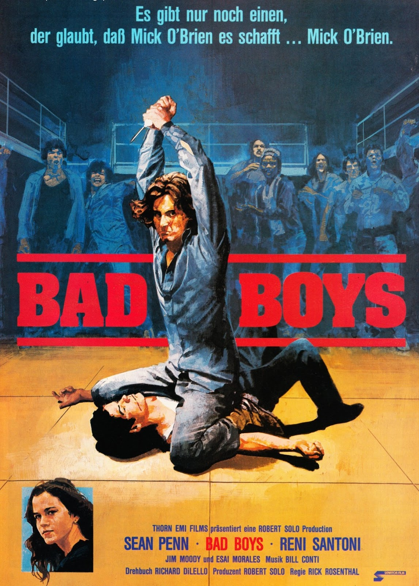
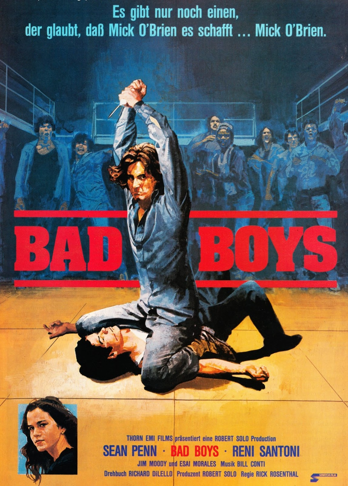

Recently Reviewed Movies


 



 10/10
4/10
6/10
4/10
2/10
10/10
7/10
10/10
6/10
10/10
4/10
6/10
4/10
2/10
10/10
7/10
10/10
6/10
About Me
Hello! Nice of you to stuble upon my website. My name is Henry Baldssarre, but I'm better known as FibrousFilms, especially here. If you would like to read one of my reviews, you can click one of the movies above or click here to look through everything I've reviewed. Naturally, everything is my opinion, but I would love to hear, obviously, exactly why its wrong on Twitter or something.
A few things about me:- I am not a professional writer, so, uh, don't have the highest standards
- The one movie I love the most was released on my 2nd birthday
- I'm not the biggest user of social media, but I'm around I suppose
- My Pet
- My favourite movie, obviously
- Food
88miperhr
If you like my work, consider supporting me on Patreon or buy me a Ko-fi